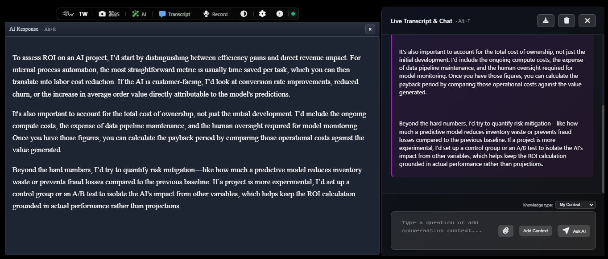

Outcome
Define what success looks like.
“Get my technical design approved in the leadership meeting.”
ThoughtWaveAI
ThoughtWaveAI understands the conversation in real time, aligns assistance with your context and desired outcome, and gives you the right insight or response at the moment it matters.

One focused companion
Shape assistance around the outcome you want, the room you are in, and the conversation as it unfolds.
Product capabilities
“Get my technical design approved in the leadership meeting.”
Follow the running conversation as it develops, so assistance stays aligned with the moment.
Ask direct questions and receive focused answers while the conversation is still moving.
Get concise guidance based on the recent conversation without having to formulate a full question.
Include relevant documents and context when the conversation needs deeper grounding.
Follow the transcript and ThoughtWaveAI responses on another screen while keeping your primary workspace focused.
How it works
A simple rhythm for every important conversation.
Set Outcome, Influence, and Context.
ThoughtWaveAI follows the live conversation.
Use Assist or Ask AI when you need guidance.
Summarize, Review, and capture next steps.
After the conversation
Capture key topics, decisions, concerns, open questions, commitments, and follow-up.
Evaluate how the conversation progressed against your Outcome and selected Influence.
Privacy & control
Begin with a focused, private workspace.
Choose how the experience appears on your screen.
Use mobile viewing only when it supports your workflow.
Control recording, context, and visibility for the conversation.
Private beta
ThoughtWaveAI is currently being refined through controlled Windows testing.
Private beta
We’re currently inviting a small number of beta users. To help us understand where ThoughtWaveAI can create the most value, please tell us how you would use it in a real-world business scenario.
Please include:
Examples: client meeting, sales pitch, executive review, technical discussion, consulting session, presentation, brainstorming, or another professional use case.